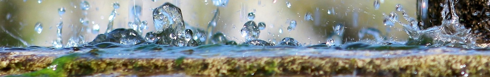

Fontus
Discover your water quality data!
Fontus is an intuitive, easy-to-use open-source web application that allows you to apply various numerical and graphical analysis techniques to your data. Upload your water quality data with a simple drag and drop and start analyzing your data. The built in demo dataset serves as an excellent starting point for familiarizing yourself with Fontus before uploading your own data.
Many calculations within Fontus are performed by the geochemical modeling software PHREEQC. PHREEQC is developed by the US Geological Survey (USGS) and is designed to perform a variety of aqueous geochemical calculations, including speciation, batch-reaction, one-dimensional reactive-transport, and inverse geochemical calculations.
Gettings started
Fontus consists of four modules. Each of the modules has several options depending on the uploaded data. Below the complete list of menu items is discussed; depending on your data, not all options may appear. For example, the field's longitude and latitude must be present for the map to become available. The demo dataset is set up to include all features and is an excellent place to start getting used to Fontus before loading your data.
-
Data: this menu option allows to upload your data and map your fields to variables used by the system. The build in dataset includes groundwater water chemistry monitoring data from Basel/Switzerland. The original dataset is published on the Open Data Portal of Basel.
-
Plots: This menu option allows to plot various plots commonly used to study water quality data. In the current version, Piper plots and maps are supported.
-
Analyses: This menu option allows to apply various numerical analyses commonly used in the study of water quality data. In the current version, the Mann-Kendall test (test for monotonic trend) is supported.
-
Calculators: This menu option offers a set of calculators to perform standard calculations in water chemistry data. The current version supports formula weight conversion, sodium adsorption ratio calculation for irrigation water, formula weight calculations for minerals and the mineral saturation index calculation using PHREEQC.